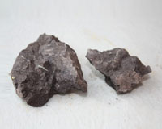
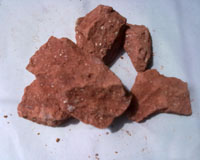
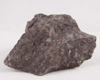
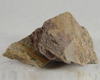
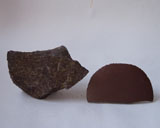
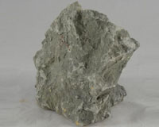

| 泥料介绍 |
|  | 紫泥 砂矿土主要由石英、粘土、水云母和赤铁矿组成，其制成紫砂成品泥具有可塑性好、生坯强度高、干燥、烧成收缩率小等良好的工艺性能而成为举世名陶。其良好的结合性和稳定的可塑性，也赋予了紫砂茗壶手工成型、拍、压、括、塑、镂、刻等多种工艺手法。 |
|  | 朱泥 朱泥是属于紫砂红泥中的一种泥，朱泥是红泥中之精品、因主要成份为红泥（含铁量极高）、又产在嫩泥矿之下层、又称“未触风曰之石骨”，石骨的意思就是未完全风化的土块，质坚如顽石，但遇水则自行溃散。 目前朱泥矿是明显减少了。但有一原则不变，只要有红泥，朱泥则不灭。 |
|  | 清水泥 江苏宜兴丁山黄龙山口本色泥。泥性：干湿易掌握，稳定性高，黏性合理，成型较易。陈泥须回炼，否则易生黑边、花泥。特点：泥色醇和尔雅，文人气息浓厚，大小件作品皆可展现紫砂风华；易与使用者产生共鸣，为明初陶手最喜使用之泥料之一。 |
|  | 段泥 段泥，也叫团泥，一种本山绿泥和紫泥的共生矿土。本山绿泥和紫泥都是紫砂的原矿。产地：黄龙山，原矿绿灰色，是紫砂泥中夹层中的夹脂，烧成后呈米黄色。窑温：1180度。收缩比：约为12%。 共生的意义是自然形成，而且两种泥性质一致,段泥原矿目前非常稀贵。 |
|  | 黑心土 《 黑 铁 砂 》黑铁砂，为早期最常见通用之泥料之一；为江苏宜兴黄龙山原矿提练再加入锰而成，当时因矿脉里铁质成份较高、所生产的茶壶会产生火疵、小熔点，日久使用，深获早期壶识者深爱、赞赏。养壶者之最爱。新壶初用砂土气重，茶汤略现砂气，经使用壶身展现出灰黑，泡茶�_数日则如墨黑，泡茶好喝，评价好赞不绝口！ |
|  | 绿泥 有丰富的天然物质, 并有着非常强有效的治疗机制. 这种治疗泥含有丰富的天然矿物质和微量元素如:硅、镁、钾、钙、锰、磷、铜、钴、锌、铁、硒、钠、铝等, 但是最重要的是硅化铝在中间起着非常重要的治疗机制。 |